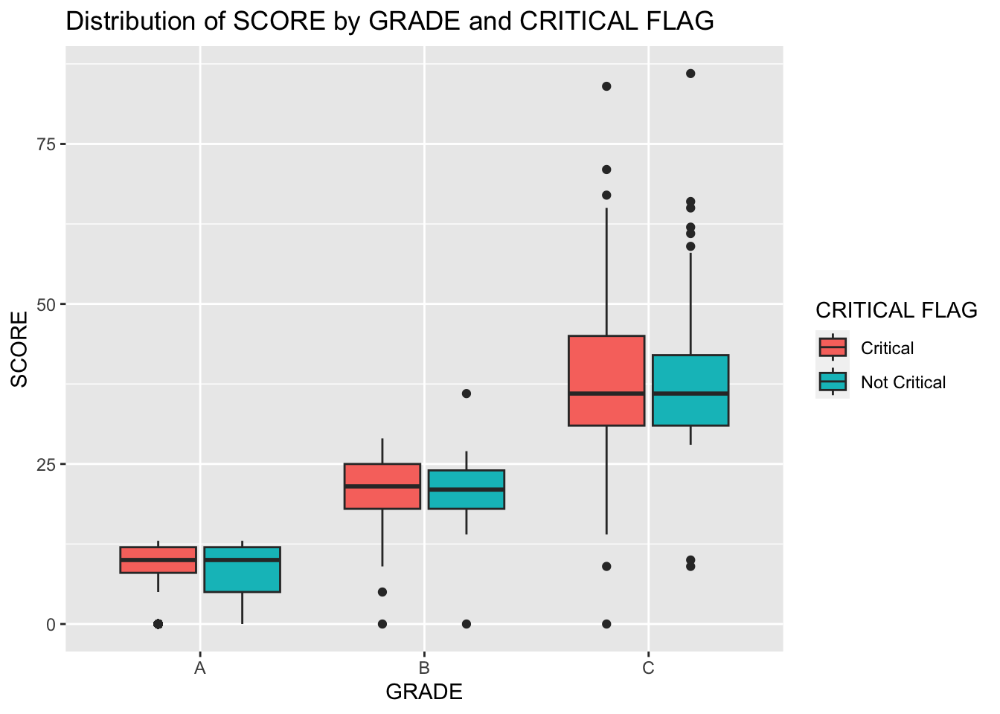
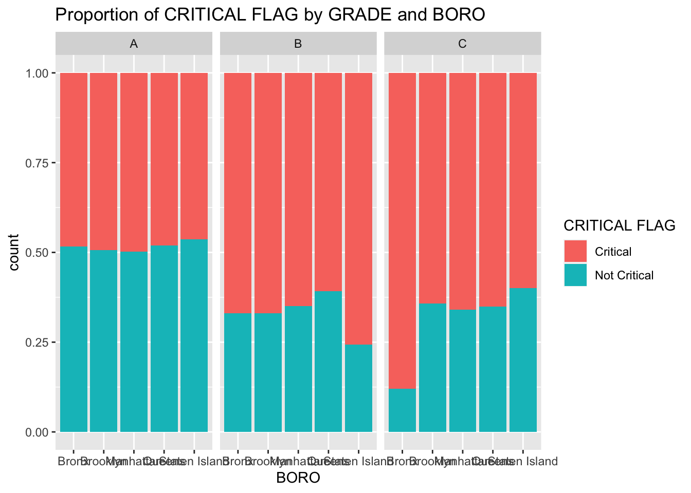
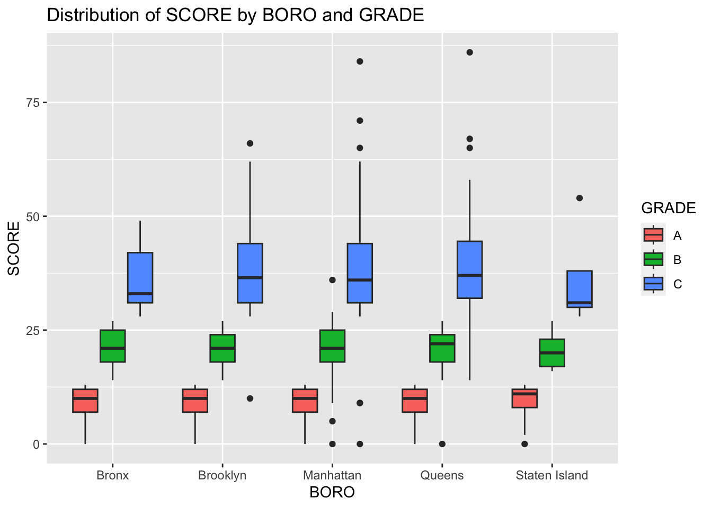

library(tidyverse)
library(skimr)
restaurant <- read_csv(
'https://bcdanl.github.io/data/DOHMH_NYC_Restaurant_Inspection.csv'
)summary_stats <- restaurant %>%
group_by(GRADE) %>%
summarize(
Mean = mean(SCORE),
StdDev = sd(SCORE),
Q1 = quantile(SCORE, 0.25),
Median = median(SCORE),
Q3 = quantile(SCORE, 0.75),
Max = max(SCORE)
)
print(summary_stats)# A tibble: 3 × 7
GRADE Mean StdDev Q1 Median Q3 Max
<chr> <dbl> <dbl> <dbl> <dbl> <dbl> <dbl>
1 A 9.26 3.42 7 10 12 13
2 B 21.0 4.16 18 21 24 36
3 C 38.6 10.8 31 36 44 86# The code calculates the mean, standard deviation, quartiles, and maximum
# of SCORE for each GRADE of restaurants.grade_a_count <- nrow(restaurant[restaurant$GRADE == "A", ])
total_restaurants <- nrow(restaurant)
grade_c_percentage <- (nrow(restaurant[restaurant$GRADE == "C", ]) / total_restaurants) * 100
cat("Number of restaurants with GRADE A:", grade_a_count, "\n")Number of restaurants with GRADE A: 16305 cat("Percentage of restaurants with GRADE C:", grade_c_percentage, "%")Percentage of restaurants with GRADE C: 1.667328 %# It counts the number of restaurants with GRADE A and calculates the
# percentage of restaurants with GRADE C. Number of restaurants with
# GRADE A is 16305 and the percentage of restaurants with
# GRADE C is 1.667328 %library(ggplot2)
ggplot(restaurant, aes(x = GRADE, y = SCORE, fill = `CRITICAL FLAG`)) +
geom_boxplot() +
labs(title = "Distribution of SCORE by GRADE and CRITICAL FLAG")
# The code creates a box plot to show how the distribution of SCORE varies
# by GRADE and CRITICAL FLAG. The box plot shows that GRADE C has the
# highest score and a wider spread of CRITICAL FLAG, whereas GRADE A has
# the lowest score and a smaller spread of CRITICAL FLAG.ggplot(restaurant, aes(x = BORO, fill = `CRITICAL FLAG`)) +
geom_bar(position = "fill") +
facet_wrap(~GRADE) +
labs(title = "Proportion of CRITICAL FLAG by GRADE and BORO")
# The code creates a bar plot to display how the proportion of CRITICAL FLAG
# varies by GRADE and BORO. The bar plot shows that the BORO's classified as
# GRADE A have the lowest critical count, whereas GRADE B and C have a higher
# critical count. The Bronx has the most critical count in GRADE C, while
# Staten Island has the least critical count in GRADE A.top_cuisines <- restaurant %>%
count(`CUISINE DESCRIPTION`) %>%
arrange(desc(n)) %>%
head(10) %>%
pull(`CUISINE DESCRIPTION`)
top_cuisine_grade_a <- restaurant %>%
filter(`CUISINE DESCRIPTION` %in% top_cuisines) %>%
group_by(`CUISINE DESCRIPTION`, GRADE) %>%
summarise(count = n()) %>%
filter(GRADE == "A") %>%
arrange(desc(count)) %>%
slice(1)
# The code finds the CUISINE DESCRIPTION with the highest proportion of
# GRADE A among the 10 most common cuisine descriptions. The highest CUISINE
# DESCRIPTION that has the highest proportion of GRADE A is American.common_dbas <- restaurant %>%
group_by(BORO, DBA) %>%
summarize(count = n()) %>%
arrange(BORO, desc(count)) %>%
group_by(BORO) %>%
top_n(3)
most_common_dba <- common_dbas %>%
group_by(DBA) %>%
summarize(count = sum(count)) %>%
arrange(desc(count)) %>%
head(1)
# The code finds the three most common restaurant names (DBA) in each
# borough and identifies the most common DBA value overall in NYC.
# Overall, the most common DBA value in NYC is starbucks.critical_dba <- restaurant %>%
filter(DBA %in% common_dbas$DBA) %>%
group_by(DBA, `CRITICAL FLAG`) %>%
summarize(count = n()) %>%
filter(`CRITICAL FLAG` == "Critical") %>%
arrange(desc(count)) %>%
head(1)
# This code determines the DBA value most likely to commit critical violations
# among the common DBA's identified in Q1f. The DBA value that is most likely
# to commit critical violation is dunkin.Q1h
ggplot(restaurant, aes(x = BORO, y = SCORE, fill = GRADE)) +
geom_boxplot() +
labs(title = "Distribution of SCORE by BORO and GRADE")
# This code creates a box plot to visualize how the distribution of SCORE varies
# across different boroughs (BORO) and restaurant grades (GRADE). The box plot
# provides insights into the variation in inspection scores for different boroughs
# and grades.